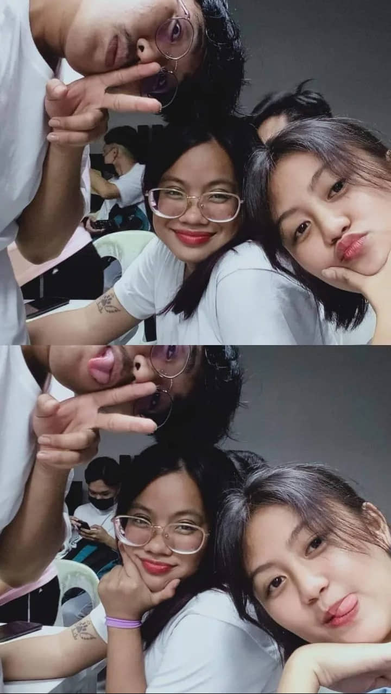

COLLEGE ME
My life as a college it’s the best at first but now in its second year it become hard even if it’s hard, I enjoy it because I found my Jem she’s a high schooler but her mind is so way ahead she already focusing on her future and at the same time she is my motivation but I feel sorry cause I had no time for her. And I have met my friends Kiko, Darwin, glen, grace, Mj, and Justine, and more.
BACK TO HOMEPAGE